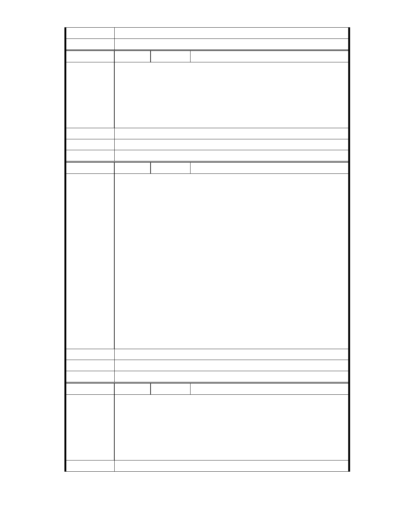

市 府 說 明 相關陳情意見將納入本案審查人民意見，依法定程序辦理。
委 員 會 決 議 同編號 1。
編
號 274
陳情人 UN201312020022
陳情理由
市民表示北市府都市計畫委員會在 11 月 28 日下午進行「慈濟內湖園區
開發計畫」的第 9 次專案小組審查會，由於此案擬將保護區變更為社福
專區，爭議多年來一審再審，不斷進出都委會專案小組與大會，這次在
小組得到了以「兩案並呈」送進大會審議的建議。市民希望相關單位不
要為慈濟緩頰，該案須從長計議，須尊重附近居民反對的意見。
建議辦法
市 府 說 明 相關陳情意見將納入本案審查人民意見，依法定程序辦理。
委 員 會 決 議 同編號 1。
編
號 275
陳情人 MA201312060288洪美惠
市長，您好：
我反對慈濟基金會變更內湖區大湖公園側保護區為社會福利園區。
2001 年納莉風災後，市府委請專家學者共同組成坡地防災小組，勘驗、
檢討後送交市長結論為：「保護區與山坡地過度開發與利用，確是坡地災
害及平地淹水的主因，故強烈建議暫緩開發利用保護區及山坡地。」
陳情理由
2002 年 11 月 15 日市府宣示的 都市發展政策白皮書中明白告訴市
民，台北市目前面臨的生態課題有： 1. 人為開發導致山域、水域環境破
壞； 2. 坡地開發、不透水面增加，使逕流量增加； 3. 自然生態敏感區
受衝擊與破壞。所以，白皮書進一步宣告：「佔台北市一半以上面積的環
境敏感地區（包括保護區、風景區、行水區），應予積極保育。 」
請問郝市長，台北市保護區的政策還在嗎? 環境敏感地區適合個案變更
嗎? 請留下內湖保護區，請為環境把關。請維護台北市保護區的政策。
建議辦法
市 府 說 明 相關陳情意見將納入本案審查人民意見，依法定程序辦理。
委 員 會 決 議 同編號 1。
編 號 276 陳情人 台灣農村陣線
因「變更臺北市內湖區成功路五段大湖公園北側部分保護區及道路用地
為社會福利特定專用區主要計畫案」及「擬訂臺北市內湖區成功路五段
陳 情 理 由 大湖公園北側社會福利特定專用區細部計畫案」兩案皆涉及台北市保護
區變更，請 貴委員會通知本會參與兩案之所有相關會議，包括專案小組
會議為荷。
建議辦法
- 318 -